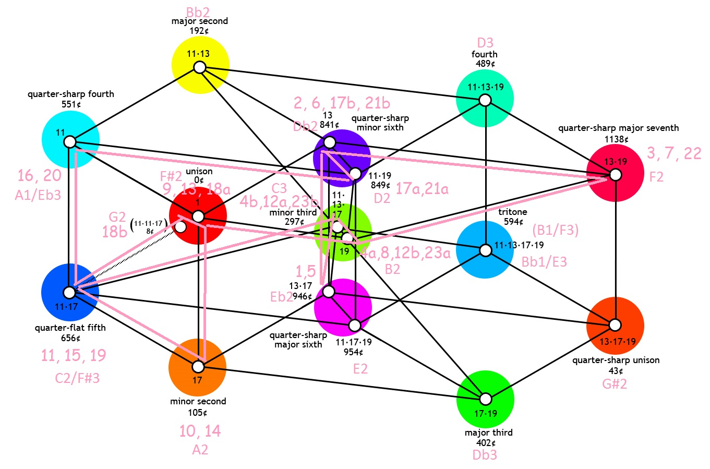
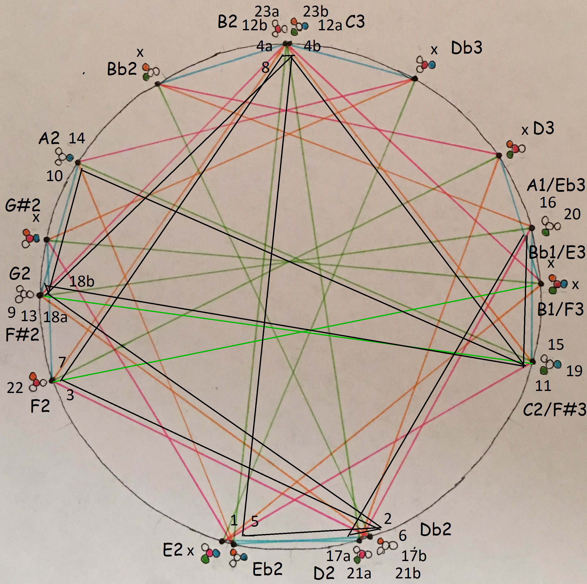

A piece based on eschewing prime harmonics 3, 5, and 7, instead using 11, 13, 17, and 19.
In 2011 I invented a tuning system based on the harmonic pun whereby movement by a 19th harmonic is almost exactly the same as a movement by an 11th, a 13th, and a 17th.
In other words, in pitch space where the octave is treated as harmonically neutral, where I can multiply either side of a harmonic ratio by any number of 2's and get a result that is considered essentially the same, then it's pretty interesting that (19 * 2^7) / 11 * 13 * 17 = 2432/2431 = 1.00041135335 ≈ 1.
More information here: https://cmloegcmluin.wordpress.com/2011/08/10/the-blumeyer-comma
I named this tiny interval the "Blumeyer comma", after myself, which feels a bit weird. Check it out, doing its thing at the very bottom of the list of Unnoticeable commas on the Xenharmonic Wiki: https://en.xen.wiki/w/Unnoticeable_comma
What's particularly interesting about this tuning is that it eschews intervals built from simpler prime harmonics. Prime harmonics are the fundamental building blocks of harmony, just as prime numbers are the fundamental building blocks of numbers per the Fundamental Theorem of Arithmetic. The lower, simpler ones are the most important and useful; most world traditions use the 2nd, 3rd, and 5th harmonics, or intervals designed to approximate them, extensively.
A precedent for setting a prime harmonic minimum exists, and it is called the Bohlen-Pierce tuning. It eschews the 2nd harmonic, the octave, from all of its harmonic ratios, whether in pure JI mode or a tempered version thereof.
So this tuning does not eschew 2 — it is a critical building block to the Blumeyer comma — but it does eschew 3, 5, and 7. As a result, for me anyway, it instills an unusual, otherworldly feeling.
In 2015, I wrote a piece using the Blumeyer comma. At the time, I didn't have a proper name for it; hence "The Blumeyer Comma JI Unpump".
I call it an "unpump" because rather than spiraling out in looping increments of the comma as JI pumps tend to do, I instead modulate by the tiny intervals in the tuning in order to return back to the home pitch as tempered pumps tend to do.
More info on comma pumps here: https://en.xen.wiki/w/Comma_pump
Here are two different maps of the bass to the track. One is simply overlaid on the previous diagram of the Blumeyer comma. The other shows it on a pitch circle around the octave.
 The chords are built from the pitches directly connected to each of these bass notes but which were not captured along this path. I guess you could call these the "left-out" notes.
The harmony comes from choosing from left-out notes, too. But instead of building a stack of all such notes for each bass note, what I did was pick a single note, then connected them by moving step-wise through the left-out notes. How long I hold each harmony note just depends on how many steps it takes to get between one bass note's harmony note and its next's using the shortest possible path. Only one note has no neighbor left-out notes: the unison.
The lead voice simply tries to move by simple intervals, in almost all cases by either an 11th, 13th, 17th, or 19th harmonic (octave reduced).
As part of the Untwelve Microtonal Summer Camp 2016, set at the peaceful Circle Pines Center in Delton, Michigan, I got my comma pump piece performed and recorded. It was at this time that I gave it a real name, Tsraxcfaubdj.
The performers, to whom I am deeply grateful:
Jacob Barton: Udderbot
Joe Monzo: Voice
Stephen Weigel: Voice
Thomas Scheurich: Cello
The piece was played in double time. I prefer the original tempo, but still adore this rendition.
To help convince some of the 14 attendees of the camp to spend some of their precious time there practicing and recording Tsraxcfaubdj, I gave a presentation explaining the tuning behind it, which by that point I had named "Yer". After camp I edited together a video version of that presentation which you can check out here.
The name "Yer" comes from my name, too. I discovered that the tuning supported not just one but two commas. The second of these two I named the Blume comma: 2057:2048, or 11 * 11 * 17 / 2^11). I explain different slicings and dicings of the pitch system (as a Euler-Fokker Genus hypercube and its constituent cubic faces; Combination Product Sets and its constituent tetrahedral tetranies and octahedral hexanies) and break down some families of its 240 available comma pumps (which are zero comma pumps via comma shifts by the comma-wide intervals present in the tuning) and operations to derive variations within them. All the while in the background some pieces composed in Yer accompany my awful voice.
Tsraxcfaubdj was written in a spreadsheet, then painstakingly ported into the Reaper DAW using a retuning VST. The organization and inner workings of the spreadsheet are to me today, several years later now, inscrutable. I found I could not pick up working on it in its form there. So, I decided to recreate it here under the banner of Musical Patterns, covering its behavior with tests, modularizing its concerns, and generally represent it in a logical, unambiguous fashion which will allow to continue to contribute to it henceforth.
I do not have specific plans to extend or revise the piece at this time, but I am aware of avenues I'd like to explore in its vicinity, so you never know.